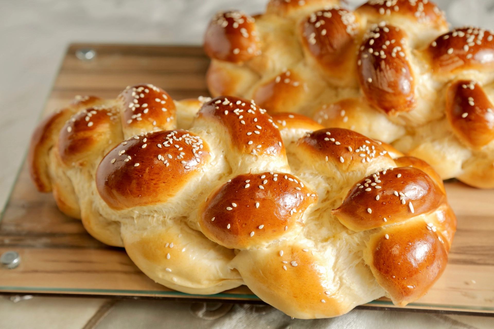

Challah

Ingredientes:
- 450ml de água morna
- 1kg de trigo
- 1 ovo
- 20g de fermento biológico seco
- 50g de açúcar
- 10g de sal
- 120ml de óleo
- 1 gema para pincelar
- Gergelim para decorar
Modo de Preparo:
- Misture a água morna com o fermento.
- Acrescente o ovo, óleo, açúcar e o sal e misture.
-
Por último, acrescente o trigo e misture, sove até desgrudar das
mãos.
-
Deixe descansar por 1 hora, modele em trança e deixe crescer
novamente.
-
Pincele com gema, salpique gergelim e asse em forno médio até
dourar.